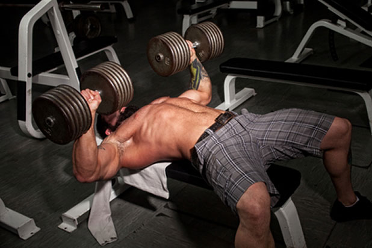
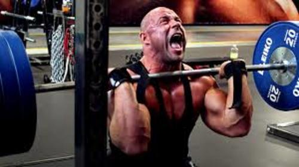
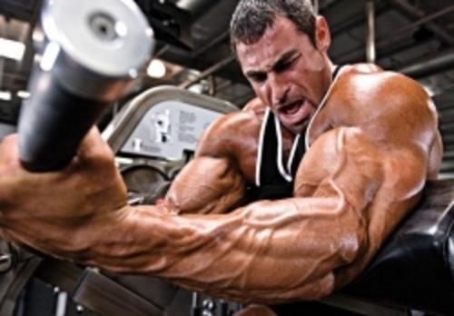
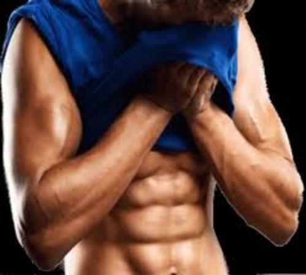
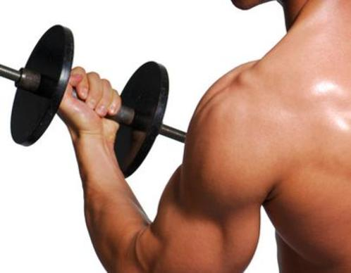
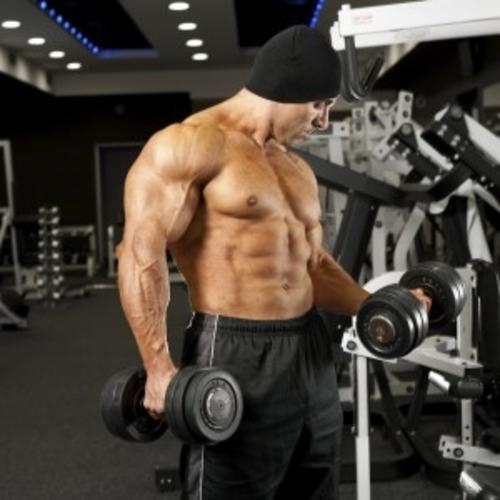

Силови тренировки
Нужно е и да уточним две неща, които за повечето спортуващи изглеждат едно и също, но са съвсем различни в действителност. За целта ще използвам един пример с щангист и трибоец. Целта на трибоеца е да вдигне максимално голяма тежест, като времето за изпълнение на опита не го интересува. На това се казва максимална сила, максимален опит. Целта на щангиста е максимално експлозивно да направи максимално тежък опит. На това също се казва максимална сила и максимален опит.
Разликата между двете е времето за изпълнение – при трибоеца то няма значение и "максимален опит" за него означава генериране на максимален въртящ момент, докато при щангиста времето за изпълнение има значение и "максимален опит" за него означава генериране на максимална мощност в много кратък период от време.
Двете качества, максимална мощност и максимален въртящ момент, трябва да се тренират едновременно, тъй като са свързани взаимно и имат принос едно към друго, ако целим обща сила, издръжливост и експлозивно-скоростни качества.
Приносът им едно към друго може да бъде онагледен лесно с прости примери. Нарастването на силата на мускулите е резултат от стремежа за адекватна адаптация на тялото към натоварването в тренировката, така че е необходимо тренировката да е с натоварване, което да предизвика този отговор. Различните школи в силовата и силово-скоростната подготовка имат различни виждания, но най-общо има няколко тренировъчни "инструмента", които се използват успешно с тази цел:
- отказ
- общ обем
- общ максимален обем (брой максимални и субмаксимални повторения)
- работа след отказ на максимална тежест
Всеки от тях трябва да се използва умерено и дозирано в тренировъчния план. Отказите например стимулират ЦНС, но в същото време я натоварват. Ако нямате сериозен стаж и опит – не прекалявайте с тях. Достатъчно е в две максимално тежки серии на движение да стигнете до него.
Общият обем може да бъде постигнат и в протоколи без много натоварване на нервната система, но с натрупване на много умора в мускулите и пренапрежение на сухожилията заради продължителната монотонна работа. Такава тренировка, макар да изглежда по-лесна и щадяща на пръв поглед, съвсем не означава, че може да бъде изпълнявана до безкрайност без негативни последствия.
Общият максимален обем е инструмент за напреднали. При него се отчита обемът от работа, извършен със или без отказ на тежест > 90% ПМ. Обикновено показателят, който се следи, е достигането на 10х1ПМ, като се отчитат работата, извършена единствено над 90% от 1 ПМ, независимо дали протоколът на изпълнението и е бил 5х3 или 12х1.
Работата след отказ на максимална тежест се използва рядко, най-често когато другите начини не са вече толкова ефективни. Например след 2 повторения на 95% ПМ, тежестта се намалява с 6-7% и се правят още 2 повторения. Това се прави максимум 3 пъти в края на тренировката. Как да тренираме за сила?
На първо място е важно да подберем упражнения и цикличност според нивото, на което са нашите възможности. Това, което работи за даден атлет с опит, за нас може да се окаже или невъзможно за изпълнение, или просто да не ни помогне.
Всички комплексни, многоставни упражнения са добри за силовата тренировка на начинаещ или на човек с малък/среден тренировъчен стаж. Раменна преса, бутане от лег с тесен и с широк хват, тяга, клек, набиране, кофички, обръщане, тласкане - това са неща, които почти всеки започнал да тренира физиката си е правил в даден момент.
Ако сме съвсем начинаещи и търсим програма, просто правим един или два кръга от горните упражнения и ги изпълняваме 4-5 пъти, като подбираме тежестта така, че да можем да направим между 1 и 6 повторения с нея. В първия кръг използваме по-леки тежести, а в следващите увеличаваме работните тежести и намаляваме повторенията.
Периодизацията и повторяемостта на една и съща тренировка трябва да са съобразени с възстановяването ни и с възможностите за трениране. За начинаещ оптималният вариант за трениране на сила е през два дни. За средно трениран може и през ден, но не повече от 3 еднотипни силови седмично, а ако се използва разделяне на упражненията в две или в повече тренировки – 4 или 5.
Как да построим тренировката?
Ако не сме сигурни в силите си и във възстановяването си, добре е да разделим упражненията на бутащи и дърпащи, или на горна и долна част на тялото, и да ги изпълняваме в две отделни тренировки. Естествено, след време е необходимо да комбинираме двете тренировки в една, или да променим самите упражнения в тях.
Какво е нужно да правят напредналите, които искат прогрес в силата? В един момент от тренирането ще можете да правите сериозна силова, без да сте преуморени или изцедени до крайност от нея. Силовите показатели ще спрат да нарастват осезаемо и очевидно ще сте в застой. Тогава трябва да стресирате тялото с друг тип натоварване - например EDT или суперсерия от няколко сходни упражнения, или специфични силови упражнения с голяма амплитуда, с различна траектория на изпълнение и с различни стабилизиращи и подпомагащи мускулни групи.
Какво конкретно би ни било от полза в конструирането на такава програма?
Няколко основни неща:
-
Комбиниране на две сходни упражнения.
Пример: Бутане от лег и кофички с тежест или набиране с тежест и тяга, тяга и чукчета. Какво постигаме така?
Стресираме допълнително едни и същи мускули, с ново за тях натоварване. Как ще се отрази това върху силата това?
Обикновено след известен брой тренировки се получава повишаване на силата във второто движение, а оттам и останалите.
-
Довършване на серията с частични повторения.
Пример: Правим клек, а после продължаваме с тежък полуклек. Така стресираме мускула с нова, по-голяма тежест, макар и за ограничен обем на движението. Така се засилва частта, която е по-близка до връзката мускул-сухожилие.
-
EDT за сила
10-12 тежки единични повторения с 92% - 95% от 1ПМ за кратко време. Увеличават много бързо максималното постижение.
-
Дроп серии
Подбираме тежест, с която правим спокойно 5 повторения. Правим серия, пауза от около 10 секунди и отново серия, като ако се налага, намаляваме или повторенията, или в краен случай тежестта. Стремим се да направим 10 пъти серия-почивка.
Така изцеждаме мускула само с тежки повторения, с малко време за почивка. Модификации на различни комплексни движения
Обръщане и изтласкване на щанга прав с вариации в хватовете, изхвърляне на щанга от клек до прав, преси с дъмбели на лежанка, редувани раменни преси с дъмбели, дълбока тяга, тяга с максимално широк хват, високо изтегляне на тежък дъмбел от земя, тръстър, суинг с една ръка, изхвърляне с една ръка, набиране с една ръка или набиране с една ръка и асистиране от другата, обръщане и изтласкване с една ръка.
Това са чисто силови упражнения, които поради комбинирането някои познати от преди движения или пък поради използването на дъмбели осигуряват максимално възможен обем на движението. Тренирайки така, след време при изпълнението на обичайните движения ще има по-добри резултати поради тренирането на няколко групи заедно в по-голям обем на движение, тоест мускулът ще е станал по-силен в най-трудните за преодоляване точки от траекторията. Тези движения и упражнения подобряват стабилизацията и координацията на мускулите.
Модифицирана тренировка EDT - дроп серии
Избираме две противоположни движения и правим с тях дроп серия с 1-3 повторения, като в паузите на първото упражнение правим второто, а в паузите на второто се връщаме на първото. При невъзможност да преодолеем тежестта за определените повторения намаляваме бройката, а при невъзможност за 1 повторение намаляваме работните тежести. Това е една изключително тежка и изцеждаща тренировка, подходяща за опитни и много напреднали атлети. Частични повторения с голяма тежест и изометрия.
Изпълнявате основните движения с по-голяма тежест и в последното повторение задържате малко под крайната горна точка, по възможност за 10-20-30 секунди. Това е една изключително добра тренировка за сухожилията и за психиката на атлета. Частичните повторения допринасят много за повишаването на максималния въртящ момент – максималната възможна за преместване тежест. Желателно е да изпълнявате тези частични повторения в "силов квадрат" - пособие, което ще ви помогне да се предпазите от фалове и същевременно да правите самите движения точно от едно и също място на стартиране.
Унилатерални упражнения и упражнения с неконвенционални силови уреди и пособия. При унилатералните движения мозъкът стимулира и неработещата част от тялото, тоест нервните импулси отиват и към почиващата в момента ръка/крак. Те изискват по-добра стабилизация, координация и баланс, което ни прави по-силни в същото движение, изпълнено в билатерален вариант.
Освен това можем да редуваме страните, като това ни дава по-висока интензивност и по-добър резултат.
Необичайните силови уреди, пособия и упражнения като кръстачка, колесник, катерене на въже с допълнителна тежест, гума и тежък чук, пудовки са използвани дълго време в тренировките на едновремешните атлети, а в отделни спортове, изискващи специфична сила и издръжливост се използват и днес с доказана ефективност.
Сравнително прости и лесни за направа и с подръчни материали и средства, те могат да заместят голяма част от упражненията в силовата тренировка при липса на зала с условия и свободни тежести.
Контрастна силова тренировка
В началото на тренировката направете упражнения със собствено тегло - кофички, набирания, опори от стойка на ръце, лицеви опори, подскоци, спринтове - по 3-4 серии, и след това се насочете към основните движения за няколко тежки серии в диапазона 1-3 повторения.
Приложението на предложените варианти в статията следва да се проконтролира от треньор или опитен партньор, за да се снижи рискът от контузия. Желателно е и да споделите в коментарите кой метод увеличи силата ви най-резултатно.